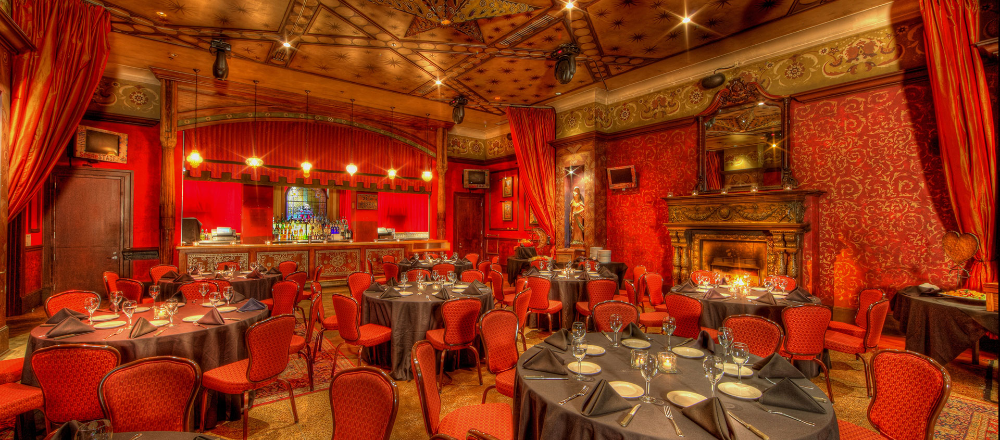
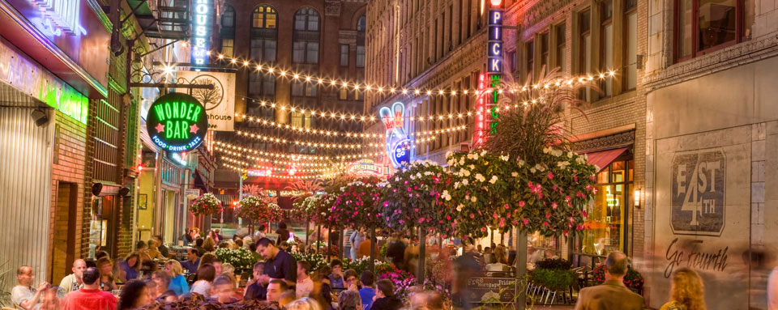

A night in Cleveland is always full of life
The House of Blues
The House of Blues almost always has an event going on, here is their here. The house of blues is a great place to go and see some entertainment. There is also a restaurant and bar attached to the venue, which is absolutely beautiful. In total The House of Blues capacity is 3,000 people, that's including the music hall, lobby, patio, and restaurant.
If you're into gambling there is the Hard Rock Casino which also hosts entertainment and has multiple places you can eat at. Club Velvet is a part of the casino where they have comedians, bands,and also have viewing parties for fights and sports games. There is so much to do at the Casino, which makes it a great place to go with a group of friends or even on your own. Here is a list of their upcoming entertainment.
If you're going to downtown Cleveland then East 4th Street District is somewhere that you have to visit. East 4th Street is beautifully decorated and always full of life. There are restaurants, bars, and entertainment including The Corner Alley, Pickwick & Frolic, Lola Bistro, and more. This area is very unique, Just about all of these places offer out door eating (weather permitting) so you can enjoy the weather. You are guaranteed to have a great time
